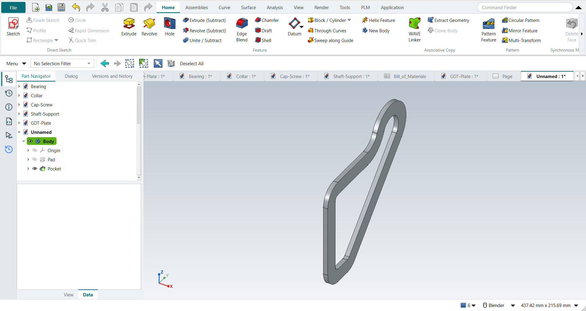

Tutorial I: The Gasket
| Book |
Shih, Parametric Modeling with Siemens NX, ch. 6 (a millimetre part) |
| You learn |
Quick Extend, Quick Trim, sketch Fillet, fully defining a sketch, Project Curve, Offset Curve, a design change the offset follows |
| Sizes |
R20 fillets, a 5 mm plate, a 15 mm offset, the height changed to 150 mm. The outline’s sizes are in figures only: an 80 mm left side and an R30 boss here. |

In short
-
An outline, a circle and a line tangent to it; E (Extend) and T (Quick Trim).
-
The book’s dimensions until the solver says Fully constrained.
-
F (Fillet) R20; add the R20 dimensions.
-
Extrude 5 mm.
-
On the front face: Project Curve, Offset Curve 15 mm inwards, Extrude (Subtract) through all with only the inner loop.
-
The design change: the overall height to 150 mm; the offset follows.
Step by step
| # | In the book (NX) | In FreeCAD NX-Style | Result | Notes |
|---|---|---|---|---|
I1 |
File > New, Model template, millimetres |
Ctrl+N |
same |
|
I2 |
Extrude (X), YZ plane |
X key, plane row + MB2 |
same |
picked YZ-plane (Base plane) |
I3 |
Profile (outline), Circle, Line ending on the bottom line, tangent to the circle |
Z key + 4 MB1 clicks, O key + 2 clicks, L key + 2 clicks, MB2 after each |
same |
geometry ['GeomCircle', 'GeomLineSegment', 'GeomLineSegment', 'GeomLineSegment', 'GeomLineSegment']; tangent picked up while drawing True |
I4 |
Extend: the top line up to the circle, MB2 |
E key, MB1 near the line’s end, MB1 on the circle, MB2 |
same |
line now ends at x = 94.949 (meets the circle at 94.953) |
I5 |
Quick Trim: the bottom line past the slanted line, the lower part of the circle, MB2 |
T key, MB1 on each part to remove, MB2 |
same |
bottom line now ends at x = 88.798 (slanted line at 88.798); 1 arc, 0 full circle; outline closed True; geometry 5 → 5 |
I6 |
The book’s dimensions: centre in line with the top line (0.0), its horizontal location, the radius, the corner on the origin; horizontal/vertical constraints confirmed; fully defined |
constraints: centre on the top line, radius, horizontal location of the centre, height of the centre, angle of the slanted line; H/V: Vertical 1 implied, Horizontal 2 |
same |
centre -1.287 → -0.000 mm from the top line; outline closed True; solver: 'Fully constrained' (0 DoF). NX sets a 0.0 location dimension; FreeCAD has a point-on-object constraint for it; implied already: left edge on the origin, bottom edge on the origin |
I7 |
Fillet R20 at the corners |
F key; radius 20 at each corner where two curves meet at an angle |
differs |
4 fillets of 4 corners 95, 78), (0, 78), (0, 0), (89, 0; outline closed True; constraints re-confirmed after the fillets: Vertical 1, left edge on the origin, bottom edge on the origin; 4 R20 dimensions added (FreeCAD’s sketch fillet constrains tangency, not the radius); solver 'Fully constrained' (0 DoF). The book makes five, the arc-to-slanted-line join being tangent here leaves four; the radius is typed after picking in FreeCAD |
I8 |
Finish Sketch, End 5 mm, OK |
Ctrl+Q, 'lengthEdit' = 5 mm, MB2 = OK |
same |
volume 56106.6 mm^3, expected 56106.6; 1 solid(s); outline area 11221.3 mm^2 |
I9 |
Extrude, Sketch Section on the front face |
select Face11 + ribbon 'Home › Feature > Extrude (Subtract)' |
differs |
subtracting extrude is its own button |
I10 |
Project Curve (the whole face), Offset 15 mm, Reverse Direction to the inside, OK |
9 edges projected; ribbon 'Sketch › Edit Curve > Offset Curve', 'Add offset constraint', MB1 15 mm inside; Select Redundant Constraints + Delete; offset dimension typed 15 |
differs |
9 projected curves, 9 offset curves; the click gave 14.802 mm. FreeCAD’s own offset constraints left the sketch unsolvable (solver: 'Redundant constraints:'; selected ['Constraint17']); after deleting it the sketch solves (True). NX types the distance and flips the side with Reverse Direction; FreeCAD takes the side and distance from the click, the exact value from its offset dimension |
I11 |
Offset loop: 15 mm inside the outline; only the inside loop is the section |
measured in the sketch; profile edges 9, offset curves 9: the projected outline is reference geometry, as the book selects only the inside loop |
same |
closed True; nearest distance to the projected outline 15.0 mm |
I12 |
Boolean Subtract, Reverse Direction, Through All, inner loop only, OK |
'Through all', MB2 = OK |
same |
volume 29310.1 mm^3, expected 29310.1; 1 solid(s); the projected outline is reference geometry here, so only the inner loop cuts |
I13 |
Change the overall height to 150 mm: the offset follows |
the centre’s height dimension: 78.39 → 119.99 (+ R30.01 = 150) |
same |
overall height 108.398 → 150.0000 mm; inner loop 15.0 mm inside the outline |
I14 |
The part is shown in the graphics window |
render of the graphics window |
same |
5.2% of the view shows the part |
| Result | Means |
|---|---|
same |
The book’s NX steps work as written. |
differs |
It works, but the FreeCAD way is different; the notes say how. |
limit |
The book’s way fails in FreeCAD itself; a workaround follows in the next steps. |
missing |
FreeCAD has no such function; a stand-in follows. |
skipped |
Not replayed; the notes give the reason. |
FAILED |
Did not work. |
What differs from NX
-
A sketch fillet does not dimension its radius and removes the constraints that held its corner; put them back.
-
Offset Curve takes the side and the distance from an MB1 click; type the exact distance into its dimension afterwards.
-
With Add offset constraint on, FreeCAD 1.1.4 gives the closed loop one redundant constraint. Sketch › Select Redundant Constraints, then Delete (I10).